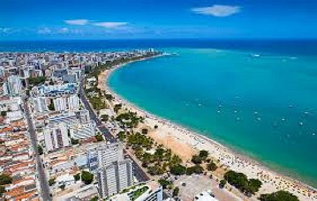
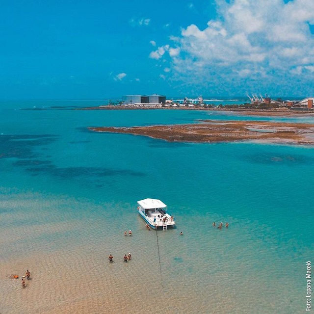
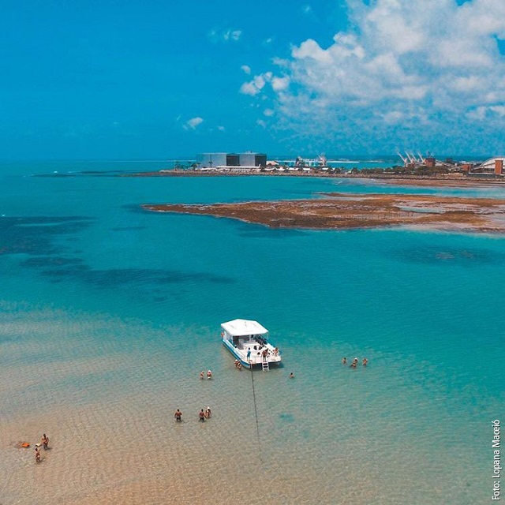

A Praia de Ipioca, em Maceió, é conhecida por suas águas cristalinas e tranquilas, sendo um refúgio paradisíaco para quem busca sossego e beleza naturalela é uma das praias mais bonitas do Brasil, com coqueirais exuberantes e águas mornas.
Ideal para famílias, oferece atividades como mergulho, passeios de barco e esportes como vôlei e futebol de areia.
PRAIA DO PAJUÇARA
 


A praia de Pajuçara, localizada em Maceió, é conhecida por suas águas calmas e piscinas naturais,
que se formam na maré baixa devido aos recifes de coral.
É um destino popular para turistas, especialmente famílias e aqueles que procuram relaxar em um ambiente tranquilo e com boa infraestrutura.
As jangadas partem da praia para as piscinas naturais, onde é possível nadar, mergulhar e observar peixes.
O que fazer em Pajuçara:
Desfrutar das piscinas naturais:
Aproveite para nadar, mergulhar e observar a vida marinha nas piscinas naturais.
Passear de jangada:
O passeio de jangada é uma experiência tradicional em Pajuçara e permite conhecer as piscinas naturais de perto.
Caminhar na orla:
A orla de Pajuçara é um local agradável para caminhadas, com calçadão e ciclovia, e oferece uma bela vista do mar.
Visitar a Feirinha de Artesanato:
A feira de artesanato é uma ótima opção para comprar lembranças e conhecer um pouco da cultura local.
Saborear a culinária local:
Aproveite para experimentar os pratos da culinária regional em restaurantes e quiosques próximos à praia.